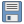
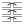

PDM - Importar para o Modelo de Dados (GeoPackage)
Plugin QGIS · Ajuda e referência de funcionalidades
Visão Geral
O plugin PDM - Importar para o Modelo de Dados destina-se a apoiar a transferência de
dados espaciais para um GeoPackage que respeite o modelo PDM, simplificando mapeamentos e passos comuns de
preparação.
As principais funcionalidades são:
Importação de dados - carregar camadas de origens diversas (gpkg, PostgreSQL/PostGIS, shp, mpk, csv, (pasta).gdb) e
transferi-las para o GeoPackage modelo do PDM, com mapeamento de campos e valores conforme o catálogo de
objetos.
Preparação e validação básica - operações como separação de multipart, reparação de
geometrias inválidas (makeValid) e verificações simples de consistência de campos.
O modelo de dados GeoPackage do PDM contém as tabelas objeto_ponto, objeto_linha e objeto_poligono, com os campos obrigatórios definidos
pela DGT.
Barra de Ferramentas
Ícone
Função

Guardar
Guarda a configuração actual de mapeamento num ficheiro .json, para reutilização.
Carregar
Carrega uma configuração de mapeamento previamente guardada em .json.
Modelo
Descarrega um ficheiro pdm_modelo.zip (modelo GeoPackage vazio) para o local escolhido
pelo utilizador.
Versão
Verifica as versões do plugin e do modelo GeoPackage, quando disponíveis.
Ajuda
Abre/fecha este painel de ajuda.

Mapear
Mapear Automaticamente - o plugin compara os nomes das colunas da origem com os do modelo
usando um rácio de similaridade
Filtro geom
Filtro de tipo de geometria (p.ex. point / line / polygon).
Tabela
Abre a tabela de atributos da camada de origem selecionada.
Valores
Mostra os valores únicos do campo de origem selecionado (útil para mapear valores).
Adicionar camada
Adicionar camada ao mapa para visualização dos dados geográficos.
Separador: Configuração / Mapeamento
1. Selecionar o GeoPackage modelo
Clicar em Selecionar GeoPackage (Modelo) e escolher o ficheiro .gpkg
que serve de destino (modelo da PDM). Se o ficheiro já estiver carregado como camada no QGIS, é detetado
automaticamente.
O plugin valida se o ficheiro tem permissões de escrita.
As tabelas disponíveis (objeto_ponto, objeto_linha, objeto_poligono) são listadas automaticamente.
2. Tabela de destino
Selecionar a tabela de destino conforme o tipo de geometria a importar.
O campo DTCC (código de município) é preenchido automaticamente se existir no GeoPackage;
pode ser ajustado manualmente.
O botão Ver Catálogo (modelo) mostra os códigos e designações do catálogo,
atualizados em função da tabela selecionada.
3. Adicionar fontes de dados
Formato
Como carregar
.gpkg
Todas as camadas do GeoPackage são importadas de uma vez.
PostgreSQL
Ligação a base de dados PostGIS através de perfis de ligação configurados no QGIS.
.shp
Ficheiros Shapefile individuais.
.mpk
Pacote de mapas ArcGIS - o plugin procura shapefiles internos via GDAL VFS.
.csv
Texto delimitado por vírgula, carregado como camada de texto.
Pasta .gdb
File Geodatabase (ESRI) - usar o botão Adicionar pasta GDB.
Após carregar as fontes, a janela do plugin mantém-se em primeiro plano. As camadas carregadas
aparecem no grupo Tabelas Origem do painel de camadas do QGIS.
4. Mapeamento de campos
Existem três formas de mapear campos da origem para o modelo:
Mapear Automaticamente - o plugin compara os nomes das colunas da origem com os do modelo
usando um rácio de similaridade (por defeito 0,7). O resultado é registado no log.
Adicionar linha manualmente - clicar em Adicionar Linha e definir:
Coluna do Modelo -> Tabela de Origem -> Coluna
de Origem -> (opcional) Código (substituição). Se o Código (substituição) for
preenchido, esse valor será usado na importação.
Mapeamento de valores - quando a coluna de origem tem designações que correspondem a códigos
do catálogo, usar o botão Mapear na coluna Ações para associar cada valor de origem a
um código de destino. O botão Mapear Valores Automaticamente faz esta correspondência
por similaridade de texto.
Exemplo: se o valor de origem for "Espaços Centrais" e no catálogo existir
"Espaço Central", com rácio 0,7 a correspondência é aceite automaticamente.
5. Opções de importação
Separar geometrias múltiplas (Multipart -> Singlepart) - ao ativar esta opção, geometrias
multi-parte (MultiPolygon, MultiLineString, MultiLinePoint) são decompostas em partes simples antes da inserção, garantindo
conformidade com o modelo. [Não utilizar em tabelas que tenham campos chave que sejam unicos]
Reparar geometrias inválidas (makeValid) - aplica automaticamente a função de reparação a
geometrias inválidas durante a importação.
6. Executar importação
Após configurar todos os mapeamentos, clicar em Executar Importação. O plugin valida
cada registo e insere os dados no GeoPackage de destino conforme o mapeamento.
Verificar que o GeoPackage não está aberto por outro processo antes de executar. A importação de
grandes volumes de dados pode demorar.
Filtrar por Tipo de Geometria
A tabela de mapeamento tem uma coluna Tipo de Geometria e um menu de filtro no cabeçalho que permite:
Mostrar todas as linhas.
Selecionar apenas linhas com um determinado tipo de geometria (p.ex. point / line / polygon).
As opções do filtro são atualizadas dinamicamente com base nos valores presentes na tabela de mapeamento e o estado do filtro é registado no log.
Guardar/Carregar Configuração
Guardar Configuração: cria um ficheiro JSON com o mapeamento actual (inclui caminhos das fontes, mapeamentos por linha, DTCC, planta e rácio de similaridade).
Carregar Configuração: importa um ficheiro JSON e tenta preencher a interface com as definições guardadas (avisa se a versão de configuração for diferente).
Separador: Registo
O separador Registo (Log) apresenta todas as mensagens geradas pelo plugin com data e hora:
Resultados das verificações de validação (número de erros, camadas criadas).
Avisos de importação (campos não mapeados, geometrias reparadas, etc.).
Erros e exceções com detalhe técnico.
O botão Guardar Log exporta o conteúdo para um ficheiro .txt para
arquivo ou reporte técnico.
As mensagens de validação incluem linhas DEBUG quando relevante (ex: contagem de elementos
inseridos na camada de reparação). Estas linhas podem ser ignoradas em uso normal.
Resolução de Problemas (FAQ)
Não encontro as tabelas no GeoPackage: selecione manualmente o GeoPackage com
Selecionar GeoPackage (Modelo).
Erro ao escrever no GeoPackage: confirme permissões e que o ficheiro não está a ser usado por outro
processo.
Ficheiro .gdb ou .mpk não carrega: verifique a instalação e suporte do GDAL no seu sistema.
Camada reparada tem menos elementos: consulte o log para mensagens [DEBUG makeValid].
 Carregar
Carregar Modelo
Modelo Filtro geom
Filtro geom Adicionar camada
Adicionar camada